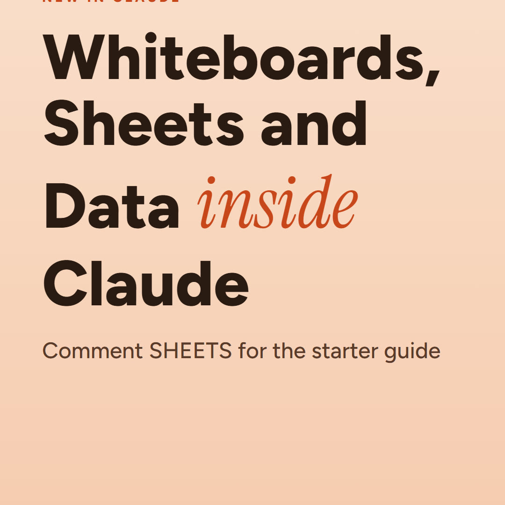

Claude Sheets, Whiteboards and Data: the starter guide
Where to find Anthropic's three new tools, what each one does, and prompts you can copy to try them today. For anyone on a paid Claude plan.

Quick start
- Open Claude on the web, the desktop app or your phone, on any paid plan.
- Ask for the thing you want: a sheet, a board or a dashboard, in one sentence. The prompts below are a good first try.
- Share it with your team, so you and Claude keep editing it together.
What it is
On 10 November 2026 Anthropic launched Claude Whiteboards and Claude Sheets in beta, and Claude Dashboards became generally available as Claude Data. Whiteboards is a shared board where your team brainstorms with Claude, Sheets is a spreadsheet Claude builds and edits with you, and Claude Data turns your company's numbers into dashboards and data stories.
The point is that the work stays in Claude. Before, you moved Claude's output into another tool, where Claude couldn't follow your changes. Now boards, sheets and dashboards live in Claude and your team keeps editing them there.
Before you start
- A paid Claude plan. All three are on all paid plans.
- Web, desktop or mobile. All three work on each.
- Whiteboards and Sheets are in beta. Anthropic says sheets have simple spreadsheet functionality for now, with more coming.
- Claude Data needs a data connector, such as a warehouse or a CRM. Without one there is no company data for it to read.
- On a Team plan, all three are on by default.
- On an Enterprise plan, Whiteboards and Sheets are off by default, and Claude Data turns on by default on 19 November 2026. An admin changes these in Organization settings > Artifacts.
Step 1: Plan it on a whiteboard
- Talk through a messy plan with Claude, out loud or typed. Claude turns it into a board with a timeline, owners and dates.
- Your team adds to the same board in real time. In a retro, for example, everyone adds notes, and Claude groups them by theme and drafts each person's action items.
- To ask about one part of the board, drag a box around it and ask Claude your question.
- When you're done, Claude can turn the board into a doc or a deck, or bring it into Lucid, Miro or Vani by Zoho.
Step 2: Build it in a sheet
- Ask for a sheet in one sentence. Claude builds it with tabs, formulas, formatting and drop-downs.
- When Claude edits cells, it outlines each new edit, so you can track what changed.
- Share the sheet with your team, and you and Claude work on it together.
- Need full Excel? Export to .xlsx or CSV, or use Claude for Excel. You can also carry on in Airtable, Asana, monday.com or Smartsheet.
Step 3: Share a story with Claude Data
- Connect a data source first (a warehouse or a CRM).
- Ask a question of your data, and Claude builds a dashboard.
- Ask Claude to draft a data story or a narrated video from your metrics, and review it before you share it.
- With live sharing (beta), colleagues see up-to-date numbers when they open your shared dashboard, even without access to your connectors. They see the results of the queries you approved and can't run others with your access.
- Your data team can certify the queries everyone should use (beta). Charts built on them carry a "certified" badge.
Try these
@Claude Lay out an illustrated timeline for the [product] launch, from [first step] to [last step].(the prompt in Anthropic's demo, with your own launch)Draft a forecast for [what you sell]. Reference last year's numbers from the [Historical] tab.(the sheet prompt in Anthropic's demo)Build a hiring budget for [team] with a tab per quarter, formulas for the totals and a drop-down for each role's status.Make a campaign tracker for [campaign]: channels, owners, dates, budget and a status drop-down.Here are everyone's retro notes. Group them by theme and draft the action items for each person.Turn this board into a timeline with owners and dates.Turn this dashboard into a short data story I can share with the team.
Gotchas
- Beta means rough edges. Sheets are simple spreadsheets for now; export to .xlsx when you need the full thing.
- No data connector, no Claude Data. Connect a warehouse or a CRM first.
- Enterprise users may not see Whiteboards and Sheets yet. They are off by default there until an admin turns them on.
Links
Save it
- claude-sheets-guide.pdf 313 KB